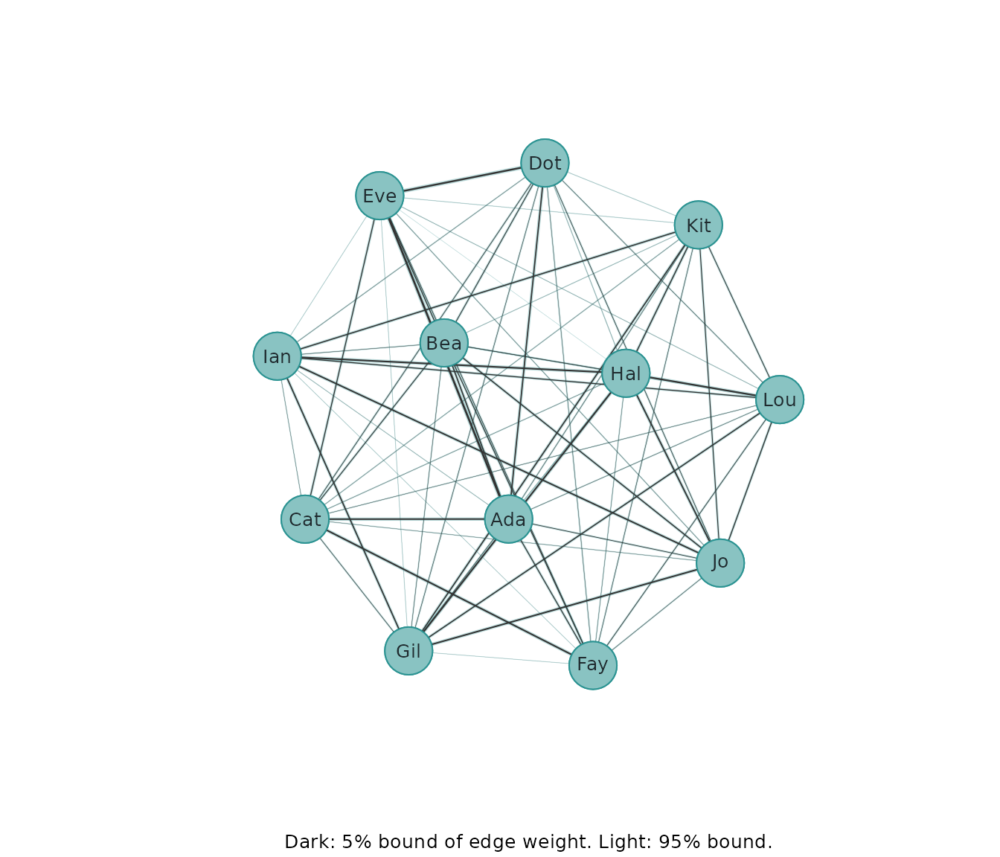
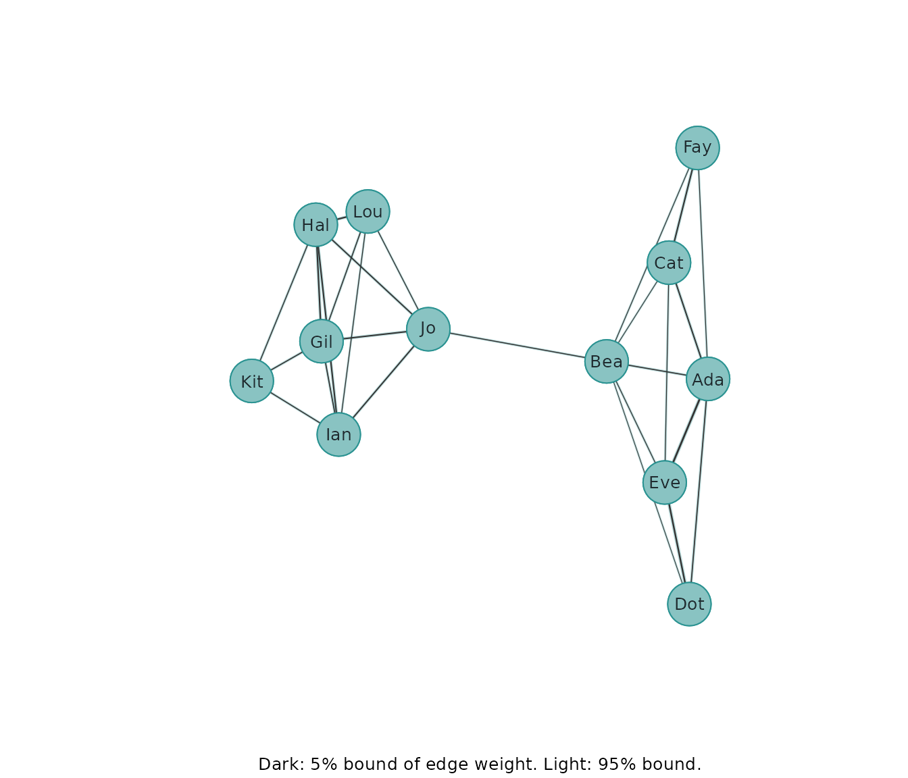
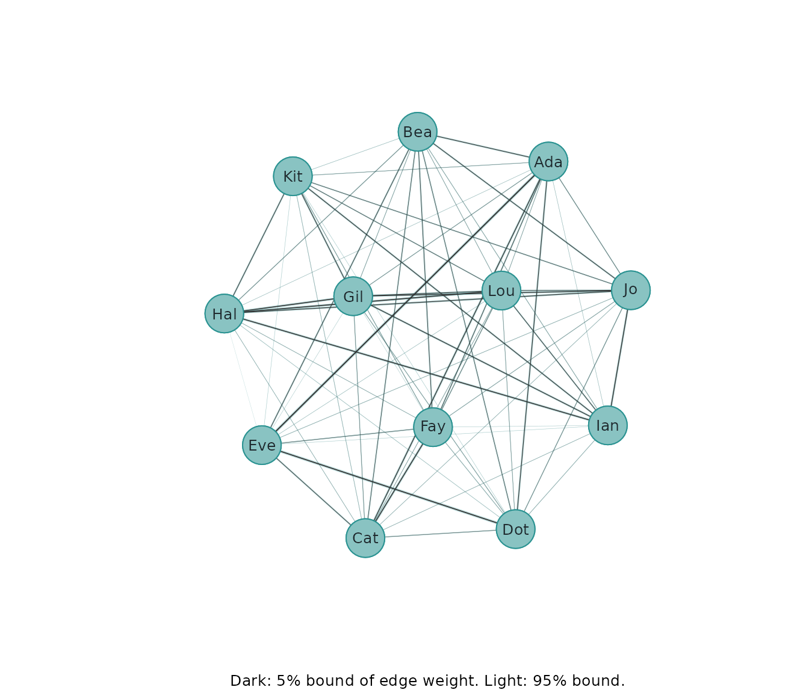
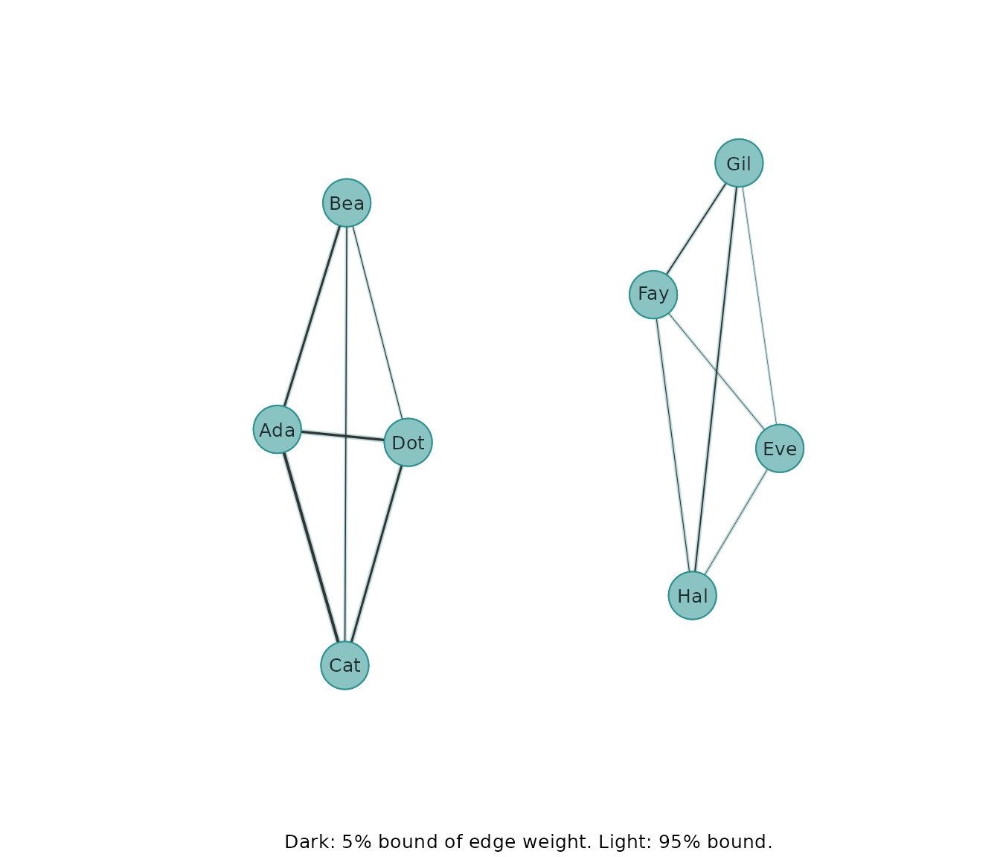

This article analyses group-based observations, in which individuals
seen in the same group are assumed to be associating (the gambit of the
group). Data of this type are often stored as a group-by-individual
(GBI) matrix. vignette("preparing_data") shows how to
convert GBI matrices; this article covers a full analysis, including
group-level effects and constraints on which pairs could have been seen
together.
Simulating a GBI matrix
A GBI matrix has one row per group (or sighting) and one column per individual, with 1 if the individual was in the group and 0 otherwise. We simulate sightings of 12 individuals that belong to two communities. Each group is formed around one community: members of that community are likely to be present, and members of the other community are rarely present. Each group was seen in either the wet or the dry season, and individuals are more likely to be in a group in the wet season.
community <- c(Ada = "A", Bea = "A", Cat = "A", Dot = "A", Eve = "A", Fay = "A",
Gil = "B", Hal = "B", Ian = "B", Jo = "B", Kit = "B", Lou = "B")
num_groups <- 80
group_community <- sample(c("A", "B"), num_groups, replace = TRUE)
wet <- rbinom(num_groups, 1, 0.5) # 1 = wet season, 0 = dry season
gbi <- matrix(0, num_groups, length(community), dimnames = list(NULL, names(community)))
for (k in seq_len(num_groups)) {
member <- community == group_community[k]
logit_p <- ifelse(member, -0.5, -3) + 1 * wet[k]
gbi[k, ] <- rbinom(length(community), 1, plogis(logit_p))
}
# Remove groups in which no individuals were seen
keep <- rowSums(gbi) > 0
gbi <- gbi[keep, ]
wet <- wet[keep]
dim(gbi)
#> [1] 79 12
head(gbi)
#> Ada Bea Cat Dot Eve Fay Gil Hal Ian Jo Kit Lou
#> [1,] 0 1 0 1 1 0 0 0 0 0 0 0
#> [2,] 0 0 0 1 0 0 1 0 1 1 0 1
#> [3,] 1 0 1 1 1 0 0 0 0 0 0 0
#> [4,] 0 1 0 1 0 0 0 0 0 0 0 0
#> [5,] 0 0 1 0 0 1 0 1 0 0 0 1
#> [6,] 0 0 0 0 1 0 0 0 0 0 0 0Converting to bisonR format
convert_gbi_to_bison() converts the GBI matrix to one
row per pair of individuals per group. For each pair (i, j), it adds a
row for every group in which at least one of i and j was present.
event is 1 if both were present and 0 if only one was.
Groups in which neither was present are left out, because they carry no
information about whether the two associate. group_id is
the row of the GBI matrix that each row came from.
Group-level variables are passed with group_properties,
a vector with one value per row of the GBI matrix, and are added as the
column group_property:
df <- convert_gbi_to_bison(gbi, group_properties = wet)
names(df)[names(df) == "group_property"] <- "wet"
head(df)
#> node_1 node_2 event group_id wet
#> 1 Ada Bea 0 1 0
#> 2 Ada Bea 0 3 0
#> 3 Ada Bea 0 4 0
#> 4 Ada Bea 0 7 1
#> 5 Ada Bea 0 12 0
#> 6 Ada Bea 0 13 1
nrow(df)
#> [1] 2443For example, the rows for Ada and Bea correspond to the groups in which Ada, Bea or both were present:
df_ab <- df[df$node_1 == "Ada" & df$node_2 == "Bea", ]
nrow(df_ab)
#> [1] 34
sum(gbi[, "Ada"] == 1 | gbi[, "Bea"] == 1)
#> [1] 34
sum(df_ab$event)
#> [1] 9
sum(gbi[, "Ada"] == 1 & gbi[, "Bea"] == 1)
#> [1] 9Each row is one sampling period for the pair, so the effort is 1.
Individual traits, such as sex or age, can be added with
individual_properties (one value per column of the GBI
matrix), which adds the columns node_1_property and
node_2_property.
Fitting a conjugate model
With no other effects in the model, the edge weights can be estimated with the conjugate binary model. It calculates the posterior distribution of each edge weight (its plausible values given the data and the prior) exactly, without sampling. The edge weight of a pair is the probability that both are present in a group, given that at least one of them is:
fit_conj <- bison_model(
(event | 1) ~ dyad(node_1, node_2),
data = df,
model_type = "binary_conjugate",
priors = get_default_priors("binary_conjugate")
)
head(get_edgelist(fit_conj))
#> node_1 node_2 median 5% 95%
#> 1 Ada Bea 0.273 0.163 0.408
#> 2 Ada Cat 0.311 0.195 0.451
#> 3 Ada Dot 0.284 0.169 0.432
#> 4 Ada Eve 0.410 0.270 0.561
#> 5 Ada Fay 0.226 0.124 0.349
#> 6 Ada Gil 0.142 0.067 0.244
plot_network(fit_conj, lwd = 5)
All pairs were seen in at least one group, so every pair has an edge. The posterior medians, arranged as a matrix, show the community structure:
edgelist <- get_edgelist(fit_conj)
nodes <- names(community)
adj <- matrix(NA, length(nodes), length(nodes), dimnames = list(nodes, nodes))
adj[cbind(edgelist$node_1, edgelist$node_2)] <- edgelist$median
adj[cbind(edgelist$node_2, edgelist$node_1)] <- edgelist$median
round(adj, 2)
#> Ada Bea Cat Dot Eve Fay Gil Hal Ian Jo Kit Lou
#> Ada NA 0.27 0.31 0.28 0.41 0.23 0.14 0.06 0.06 0.16 0.12 0.10
#> Bea 0.27 NA 0.20 0.20 0.23 0.22 0.11 0.14 0.11 0.25 0.06 0.10
#> Cat 0.31 0.20 NA 0.17 0.23 0.33 0.14 0.09 0.08 0.08 0.09 0.10
#> Dot 0.28 0.20 0.17 NA 0.39 0.11 0.13 0.07 0.10 0.16 0.05 0.12
#> Eve 0.41 0.23 0.23 0.39 NA 0.18 0.04 0.02 0.04 0.09 0.04 0.06
#> Fay 0.23 0.22 0.33 0.11 0.18 NA 0.04 0.10 0.04 0.12 0.13 0.16
#> Gil 0.14 0.11 0.14 0.13 0.04 0.04 NA 0.34 0.28 0.31 0.27 0.26
#> Hal 0.06 0.14 0.09 0.07 0.02 0.10 0.34 NA 0.33 0.30 0.25 0.34
#> Ian 0.06 0.11 0.08 0.10 0.04 0.04 0.28 0.33 NA 0.30 0.26 0.22
#> Jo 0.16 0.25 0.08 0.16 0.09 0.12 0.31 0.30 0.30 NA 0.20 0.22
#> Kit 0.12 0.06 0.09 0.05 0.04 0.13 0.27 0.25 0.26 0.20 NA 0.18
#> Lou 0.10 0.10 0.10 0.12 0.06 0.16 0.26 0.34 0.22 0.22 0.18 NAPairs in the same community (Ada to Fay, and Gil to Lou) mostly have higher edge weights than pairs from different communities, although the two ranges overlap. Plotting only the edges with a median weight of at least 0.2 shows this more clearly:
plot_network(fit_conj, lwd = 5, threshold = 0.2)
Group-level effects
Rows that come from the same group are not independent. In a group
that many individuals joined, all the pairs among them have
event = 1, and in the wet season all individuals are more
likely to be in groups. A Stan model can include a random effect of
group, (1 | group_id), which estimates an effect for each
group drawn from a shared distribution, and fixed effects of group
properties such as wet. Conjugate models only allow
dyad(), so this needs
model_type = "binary":
fit_group <- bison_model(
(event | 1) ~ dyad(node_1, node_2) + wet + (1 | group_id),
data = df,
model_type = "binary",
priors = get_default_priors("binary"),
seed = 1,
show_exceptions = FALSE
)
#> Running MCMC with 4 parallel chains...
#>
#> Chain 2 finished in 17.0 seconds.
#> Chain 3 finished in 17.2 seconds.
#> Chain 1 finished in 18.0 seconds.
#> Chain 4 finished in 18.2 seconds.
#>
#> All 4 chains finished successfully.
#> Mean chain execution time: 17.6 seconds.
#> Total execution time: 18.5 seconds.The edge weights are now estimated after accounting for the season
and for differences between groups. The season and group effects are
added to the edge weights on the logit (log-odds) scale, so the edge
weights describe the probability of association in the dry season
(wet = 0) in a group with a random effect of 0. They are
not on the same scale as those of the conjugate model:
head(get_edgelist(fit_group))
#> node_1 node_2 median 5% 95%
#> 1 Ada Bea 0.197 0.109 0.320
#> 2 Ada Cat 0.232 0.131 0.373
#> 3 Ada Dot 0.205 0.111 0.327
#> 4 Ada Eve 0.331 0.199 0.485
#> 5 Ada Fay 0.160 0.081 0.269
#> 6 Ada Gil 0.090 0.039 0.170The estimates of the other effects are shown by
summary(), and returned as a data frame by
get_effects(). They are on the log-odds scale. The table
also has a random effect for each of the 79 groups, so here only the
effect of the wet season and the standard deviation of the group effects
are shown:
effects <- get_effects(fit_group)
effects[effects$type != "random", ]
#> effect type median 5% 95%
#> 1 wet fixed 0.492 0.239 0.721
#> 81 sd(group_id) random sd 0.316 0.146 0.475The effect of wet is positive (median 0.49 on the logit
scale), so pairs were more likely to be seen together in wet-season
groups, and the standard deviation of the group effects is about 0.32.
The edge weights describe a dry-season group (wet = 0) with
a group effect of 0, so they are lower than those of the conjugate
model, which does not separate the seasons. For example, the median edge
weight of Ada and Bea is 0.20 in this model and 0.27 in the conjugate
model.
plot_network() works in the same way as for the
conjugate model:
plot_network(fit_group, lwd = 5)
Pairs that could not have been seen together
If some individuals could never have been in the same group, for
example because they were in the study area at different times, the rows
for these pairs contain only zeros. These zeros are not evidence that
the pair avoid each other, and they lead to low estimated edge weights.
individual_constraints gives each individual a value, and
only pairs with the same value are included.
As an example, we simulate a second data set from two study periods with different individuals: Ada to Dot were only present in the first period, and Eve to Hal only in the second.
period_individuals <- list(c("Ada", "Bea", "Cat", "Dot"), c("Eve", "Fay", "Gil", "Hal"))
gbi_periods <- matrix(0, 40, 8, dimnames = list(NULL, unlist(period_individuals)))
for (k in 1:40) {
period <- if (k <= 20) 1 else 2
gbi_periods[k, period_individuals[[period]]] <- rbinom(4, 1, 0.5)
}
gbi_periods <- gbi_periods[rowSums(gbi_periods) > 0, ]Without constraints, all 28 pairs are included, including the 16 pairs of individuals from different periods:
df_all <- convert_gbi_to_bison(gbi_periods)
nrow(unique(df_all[, c("node_1", "node_2")]))
#> [1] 28In a model fitted to these data, the pairs from different periods have edge weights close to 0, because the two individuals were never seen in the same group:
fit_all <- bison_model(
(event | 1) ~ dyad(node_1, node_2),
data = df_all,
model_type = "binary_conjugate",
priors = get_default_priors("binary_conjugate")
)
edgelist_all <- get_edgelist(fit_all)
edgelist_all[edgelist_all$node_1 == "Ada", ]
#> node_1 node_2 median 5% 95%
#> 1 Ada Bea 0.474 0.298 0.657
#> 2 Ada Cat 0.590 0.390 0.775
#> 3 Ada Dot 0.536 0.329 0.721
#> 4 Ada Eve 0.034 0.003 0.136
#> 5 Ada Fay 0.031 0.002 0.132
#> 6 Ada Gil 0.027 0.002 0.112
#> 7 Ada Hal 0.033 0.002 0.132With the study period as a constraint, only pairs from the same period are included:
period <- c(1, 1, 1, 1, 2, 2, 2, 2)
df_constrained <- convert_gbi_to_bison(gbi_periods, individual_constraints = period)
nrow(unique(df_constrained[, c("node_1", "node_2")]))
#> [1] 12
fit_periods <- bison_model(
(event | 1) ~ dyad(node_1, node_2),
data = df_constrained,
model_type = "binary_conjugate",
priors = get_default_priors("binary_conjugate")
)
plot_network(fit_periods, lwd = 5)
Pairs from different periods have no edge in the model, so they are not drawn. Network metrics calculated from this model treat these pairs as having no edge, rather than an estimated weight.
Further analyses
The fitted models can be used in the same way as any other edge
model, for example with extract_metric() and
bison_brm(). See vignette("getting_started"),
vignette("network_metrics") and
vignette("bison_brms").